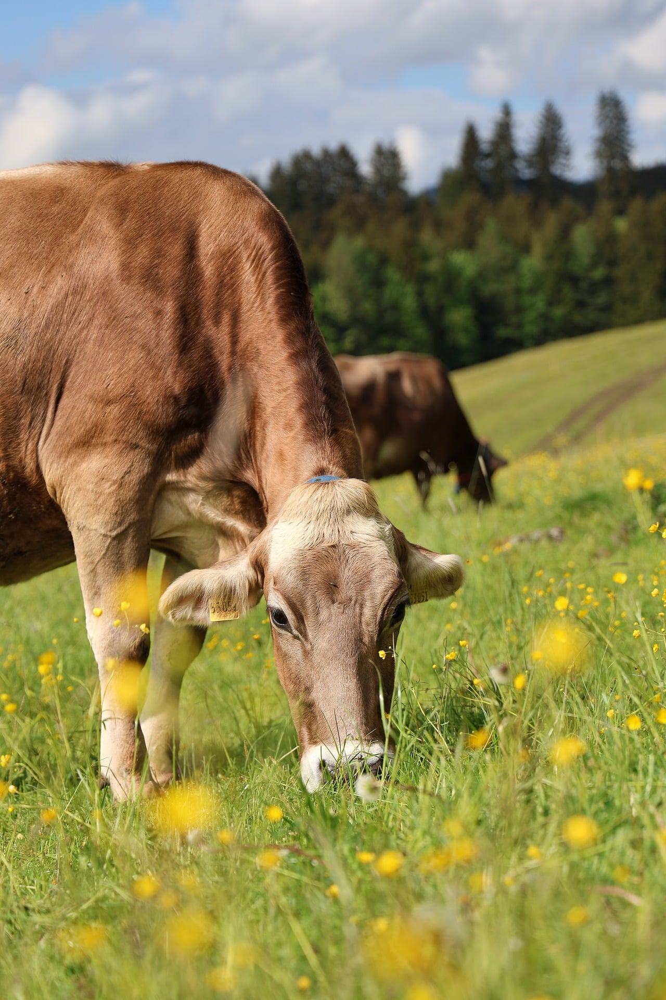

一份从真实照片里提取出来的配色与元素系统。用于视频与演示文稿，规定颜色、字体、版式、图形母题与动效的共同标准。
一头棕色奶牛在清晨的草地上低头吃草，侧逆光从右后方打过来，把草叶和野花照得近乎透明。前景的黄色毛茛被景深虚化成一片光斑，远处的云杉林沉在阴影里，压住整个画面的重心。 这不是「可爱农场」式的甜腻，而是真实、有重量的自然——光是真的，泥是真的，毛上有油亮的高光，腹下也有深影。
约七成面积是暖色（棕、黄、黄绿），撑起情绪；三成是冷色（云杉墨绿、天空蓝），给画面骨架和纵深。冷色出现的位置通常是「远处」和「背景」。
草绿、花黄的纯度都不低，但整体明度抬高、明暗对比压低。做法是：用高亮度的同色系，而不是加白或加灰。
材质层面保留照片级的颗粒与柔焦；结构层面必须抽象成几何——三角、弧线、圆点，不要描摹具象物体。
原照片的构图是「一个主体 + 大片空」。版式同理：一屏只放一个重点，其余全是空气，别把画面填满。
九色，每个颜色有固定的语义，跨页面/跨镜头保持一致。
#2E4736#5F8F3C#A8BA5E#8C5B3B#B47C4E#4A3226#E9C42C#8FB6D8#EFE9DC做层次时优先在同一色相里改明度，而不是换色相。以下每色 5 阶，从左到右由亮到暗。
| 色族 | 阶梯（可点击色块查看，色值从左至右） |
|---|---|
| 云杉墨绿 | #6E8B78 · #4E6A57 · #2E4736 · #1E3225 · #121F17 |
| 牧草绿 | #A8C77E · #7FA955 · #5F8F3C · #476D2B · #2F4A1B |
| 受光黄绿 | #D5E0A6 · #BFCE7C · #A8BA5E · #8A9B45 · #6B7A31 |
| 牛棕 | #D9A87E · #B47C4E · #8C5B3B · #6B432A · #4A2E1C |
| 野花黄 | #FBEDA6 · #F5DA55 · #E9C42C · #C9A11F · #9A7A14 |
| 天空蓝 | #DCEAF6 · #B7D2E8 · #8FB6D8 · #6C9AC4 · #4C77A0 |
| 米白 | #FDFBF5 · #F7F4EC · #EFE9DC · #DED3C0 · #C2B4A2 |
图表按固定顺序取色，同一份材料里语义不能换。
| 语义 | 用色 | 说明 |
|---|---|---|
| 正向 / 增长 | 牧草绿 | 主序列，面积最大的一条 |
| 主体 / 焦点 | 牛棕 | 被讨论的那一项，与其余形成对比 |
| 关键值 | 野花黄 | 只标最高/最低/结论那一个数据点 |
| 对照 / 外部 | 天空蓝 | 行业均值、竞品、往年数据 |
| 过渡 / 次要 | 受光黄绿 | 中间序列、辅助说明 |
| 基准 / 负向 | 可可深棕 | 基准线、需要弱化的部分 |
底 #F7F4EC，卡片 #FDFCF8，文字 #2E4736（对比 9.8:1）。适合信息密度高的页面。
底 #2E4736，文字 #EFE9DC（对比 8.6:1）。适合封面、金句、章节页。
照片上叠 45% 可可深棕或 55% 云杉墨绿蒙版，再压米白文字。蒙版里的色相要跟照片本身接近，别用中性灰。
主标题用云杉墨绿或米白；正文 #4A3226 或云杉 85%；注解用 #7A8574。深色底上一律用米白系，不用纯白。
| 规则 | 做法 |
|---|---|
| 野花黄只做点 | 面积控制在 8% 以内。需要大面积强调时改用牧草绿，黄色留给唯一那个关键数字或按钮。 |
| 黄底不用白字 | 野花黄上的文字用可可深棕（对比 7.2:1）。米白或纯白压黄只有 1.9:1，读不出来。 |
| 黄绿不相邻 | 受光黄绿和野花黄之间至少隔一层云杉墨绿或牛棕，否则两个黄会糊成一片。 |
| 不用纯黑纯白 | 最暗用 #121F17，最亮用 #FDFBF5。纯黑纯白会把这套柔和的调子打断。 |
| 蓝不过量 | 天空蓝总共不超过 5%。它是锚点，一旦变大画面会从「暖」翻成「冷」，气质就散了。 |
| 饱和贴饱和要留缝 | 两个饱和色块相接时，中间加 1px 米白描边，或留 12px 以上空隙。 |
| 用途 | 最低对比 | 检查方式 |
|---|---|---|
| 正文 | 4.5 : 1 | 导出前一页页量，字号小于 24px 的一律按正文算 |
| 大标题（≥ 32px 粗体） | 3 : 1 | 视频里字幕同样按这个标准 |
| 关键信息 | — | 不能只靠颜色区分，必须同时有形状、位置或文字标签 |
标题：思源宋体 / 方正风雅宋（有机感）。正文：思源黑体 / 苹方 / 微软雅黑。备选里必须有系统自带字体，避免换台机器就掉字。
标题：Fraunces / Playfair Display。正文：Inter / Helvetica。数字统一用等宽数字（tabular figures），滚动时不会左右跳。
| 层级 | 字号 | 字重 | 字距 | 行距 |
|---|---|---|---|---|
| 主标题 Display | 96 – 140 px | 700 | -2% | 1.10 |
| 章节标题 H1 | 64 – 80 px | 600 | -1% | 1.20 |
| 二级标题 H2 | 40 – 48 px | 500 | 0 | 1.30 |
| 正文 Body | 26 – 30 px | 400 | 0 | 1.65 |
| 数据数字 Metric | 120 – 200 px | 700 | -3% | 1.00 |
| 注解 Caption | 18 – 20 px | 400 | +4% | 1.50 |
| 字重档位 | 只用 400 / 500 / 700 三档。同一页里出现的字重不超过两种。 |
| 中文不加字距 | 只有 18px 以下的小号注解才加 4% 字距，正文加字距会显得松散。 |
| 行长上限 | 一行中文最多 20 字，英文最多 45 字符。超了就手动断行。 |
| 数字对齐 | 成列的数字用等宽并右对齐，小数点要对齐。 |
| 标点 | 中文正文用全角标点，数字和英文单位之间留一个 1/4 空。 |
列间距为列宽的 1/3，页面外边距 = 画面宽度的 8%。1920 宽下左右各留 154px。
所有垂直间距都是 8 的倍数：8 / 16 / 24 / 40 / 64 / 96。不要出现 13px、27px 这种数。
| 画幅 | 规则 |
|---|---|
| 16:9（视频/PPT） | 内容安全区 84% × 84%。标题区固定在左上，数据图形居中偏下，品牌标识右下角。跨页时元素位置不挪动。 |
| 9:16（竖屏） | 上方 18% 与下方 8% 留给平台 UI，不放内容。核心信息落在纵向 30% – 75% 区间。 |
| 照片的黄金分割 | 原片是「上 1/3 天空 + 下 2/3 地面」。版式上把信息放在下方 2/3，上方留空当作呼吸口。 |
一屏一个焦点。画面边缘最少留 64px（1920 宽下）。元素之间宁可多留 16px，也不要贴着。
卡片 24px，小元素 12px，按钮与标签全圆。用大圆角呼应自然的曲线，不要用直角。
只用一层柔和投影，带绿味：0 8px 40px rgba(46,71,54,.12)。不要硬边黑影，不要多层堆叠。
需要描边时用当前底色的 14% 加深，宽度 0.5 – 1px。不用纯灰边框。
画面里所有图形元素都从这六个母题里来。这样做出来的东西才像同一个家族，而不是拼贴的素材库。
| 颗粒 | 整页叠 3% – 5% 的胶片噪点，让画面不那么「数码」。视频里用静态噪点，不要逐帧闪。 |
| 两级景深 | 焦点元素清晰，辅助元素高斯模糊 8 – 20px。这是这套画面最核心的观感——接近照片的虚实关系。 |
| 有色的影 | 高光偏暖（向野花黄靠），阴影偏绿（向云杉墨绿靠）。阴影用 rgba(46,71,54,·)，不用中性灰。 |
| 图标规范 | 线性图标，stroke 2px，圆头圆角，单色（可可深棕或云杉墨绿）。需要强调时只用野花黄染一个局部。 |
整体节奏慢，靠「呼吸感」而不是「弹跳感」推进。全套动效都从自然的运动里找参照：草往上长、光斑慢慢移、镜头缓缓聚焦。
| 用途 | 动作 | 时长 | 缓动 |
|---|---|---|---|
| 元素入场 | 从下方 16px 上移 + 淡入 | 400 – 600 ms | cubic-bezier(.16,1,.3,1) |
| 强调 | 缩放 1.00 → 1.03 + 亮度 +8% | 300 ms | ease-out |
| 退出 | 淡出 + 轻微上移 | 250 ms | ease-in |
| 章节转场 | 柔焦进出（blur 0 → 20px → 0） | 700 ms | ease-in-out |
| 数据增长 | 数值与图形同步推进 | 800 – 1200 ms | ease-out |
| 依次入场 | 同一屏内的元素按阅读顺序依次出现，间隔 80 – 120ms。不要所有东西一起跳出来。 |
| 转场呼应景深 | 用「清晰 → 模糊 → 清晰」过渡，而不是滑来滑去。这和原片的柔焦观感是同一件事。 |
| 数字用等宽 | 滚动增长时必须用 tabular figures，否则数字宽度变化会让整行抖动。 |
| 底色基本不动 | 保持色温稳定，不做黑白闪、不做快速摇镜、不做 3D 翻转。 |
| 留够停留 | 每个关键帧至少停 1.2 秒。慢是这套调性的一部分，剪得太快气质就没了。 |
叠 45% 可可深棕或 55% 云杉墨绿蒙版，保证文字对比 ≥ 4.5:1。蒙版色相要贴近照片本身，别用中性灰压。
保留地平线，不要裁掉天空。天空是这套配色的呼吸口，裁掉之后画面会闷。
单张照片上最多压 2 行字。再多就把照片缩到半屏，文字另起一块纯色区域。
满图页不超过总页数的 1/4。其余页面用纯色底 + 局部小图，保证信息可读。
所有照片套同一条调色：曝光 +0.3、对比 -12、色温 +8（偏暖）、绿原色相偏黄。这样不同来源的照片才像同一批拍的。
不用带白色描边的剪贴画、不用渐变图标、不用带投影的 3D 字。图形一律从第 06 节的六个母题里生成。
直接粘进 HTML / 视频工程的样式表，命名与前面的色卡一一对应。
/* Studio Friluma · 晨光牧场 · v1 */ :root { /* 结构色 */ --spruce: #2E4736; /* 云杉墨绿 · 标题/深底/轴 */ --spruce-mid: #4E6A57; --spruce-deep: #1E3225; /* 主色 */ --pasture: #5F8F3C; /* 牧草绿 · 主色/正向 */ --pasture-lt: #7FA955; --sunlit: #A8BA5E; /* 受光黄绿 · 过渡 */ /* 暖色主体 */ --russet: #8C5B3B; /* 牛棕 · 主体/指标 */ --gloss: #B47C4E; /* 高光棕 · 描边/悬停 */ --cocoa: #4A3226; /* 可可深棕 · 正文/阴影 */ /* 强调与冷锚点 */ --buttercup: #E9C42C; /* 野花黄 · 唯一强调色 ≤8% */ --buttercup-lt: #F5DA55; --sky: #8FB6D8; /* 天空蓝 · 对照 ≤5% */ /* 画布 */ --bone: #EFE9DC; --cloud: #F7F4EC; /* 默认画布 */ --paper: #FDFCF8; /* 卡片 */ --muted: #7A8574; /* 注解文字 */ /* 形状与阴影 */ --radius-card: 24px; --radius-sm: 12px; --radius-pill: 999px; --shadow: 0 8px 40px rgba(46,71,54,.12); --grain: .04; /* 噪点不透明度 */ --blur-soft: 12px; /* 辅助元素景深 */ /* 节奏 */ --ease-nature: cubic-bezier(.16,1,.3,1); --t-in: 500ms; --t-out: 250ms; --stagger: 100ms; }
四个典型版式，可直接当模板用。